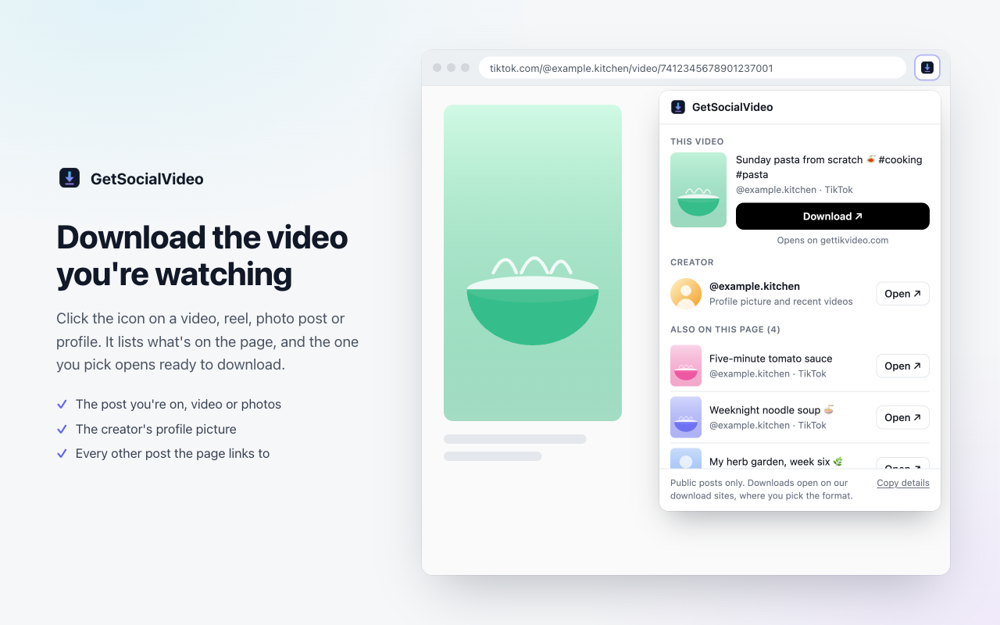
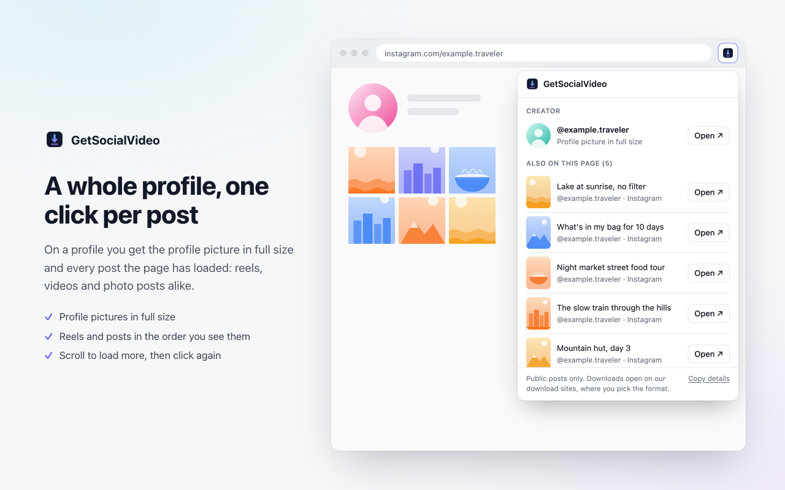
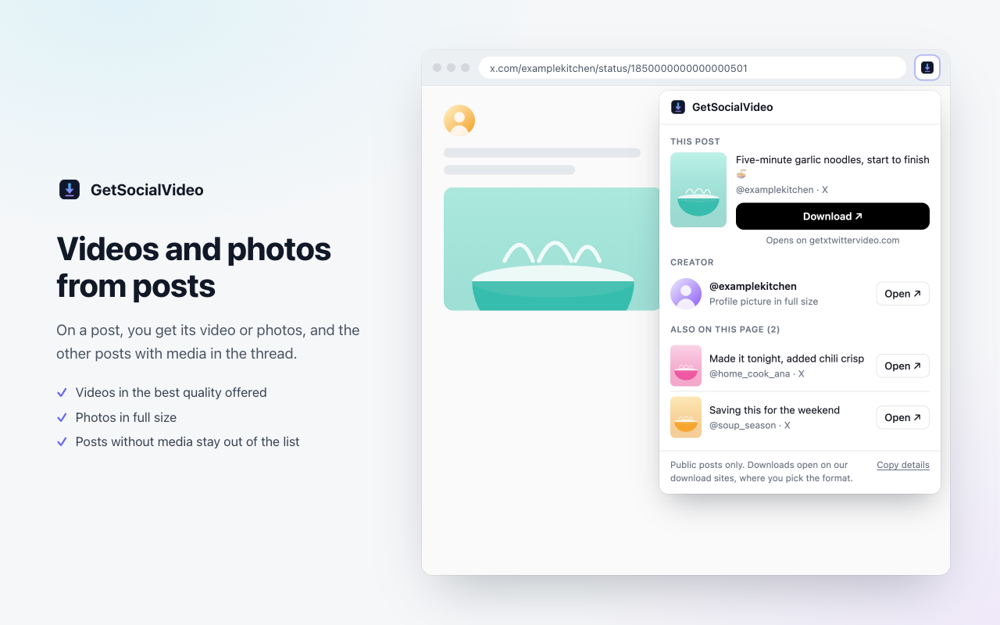
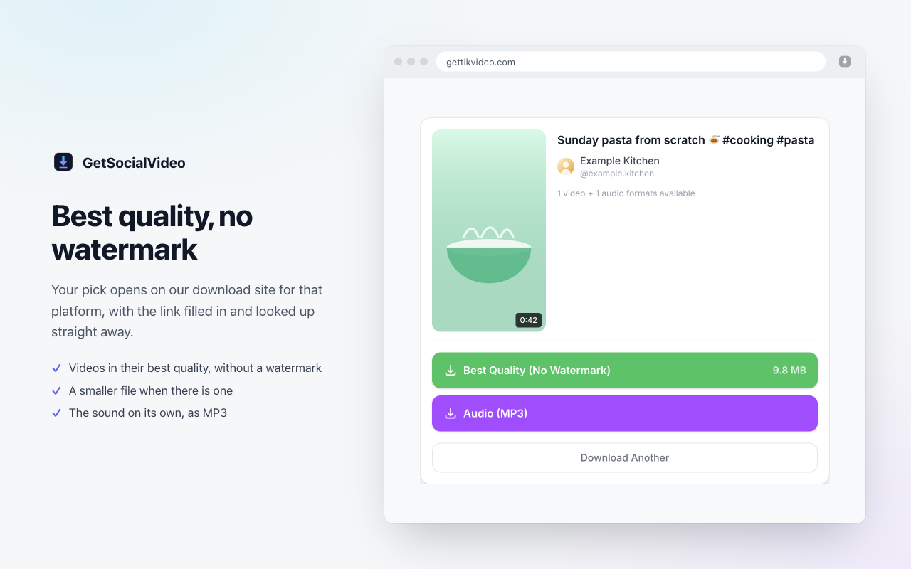
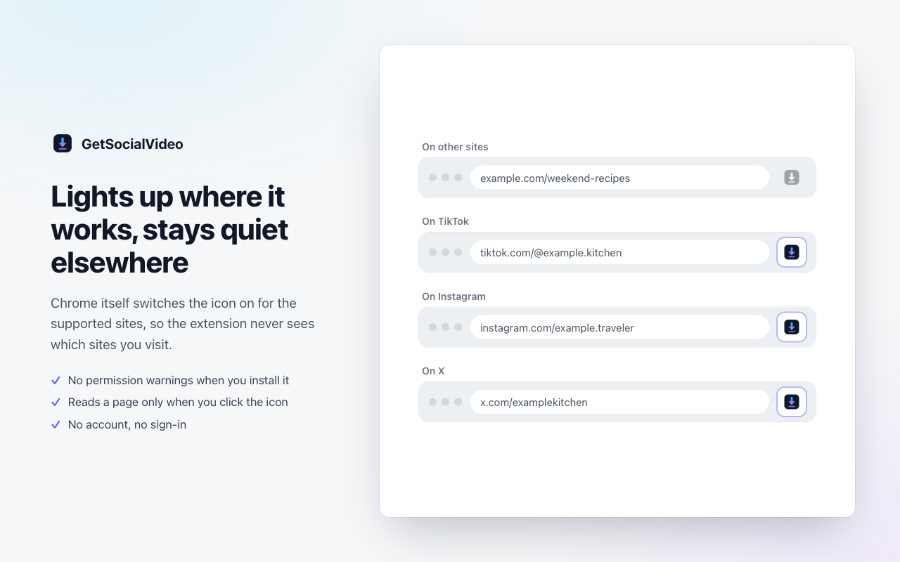

Download from your social feeds
GetSocialVideo is a free browser extension for Chrome and Edge. Click it on a video, reel, photo post or profile to see what you can download, then save the one you pick in its best quality.
Free · No account · No ads in the extension
Where it works
The icon lights up on the sites below and stays grey everywhere else. On any other page that links to posts on these sites, the popup lists those posts.
TikTok
- Videos, without a watermark
- Photo posts, as photos or a slideshow video
- Profile pictures and recent videos
- The sound, as MP3
- Reels and videos
- Photo and carousel posts
- Stories
- Profile pictures in full size
- The sound, as MP3
X (Twitter)
- Videos and GIFs from posts
- Photos in full size
- Profile pictures
- The sound, as MP3
Public posts only. Instagram story highlights can't be downloaded: Instagram shows them only to logged-in accounts.
How it works
- Open a video, reel, photo post or profile on TikTok, Instagram or X.
- Click the GetSocialVideo icon. The popup lists the post you're on, the creator's profile picture and every other post the page shows.
- Pick one. Our download site for that platform opens in a new tab with the link filled in and looked up, and you choose the format: best quality, a smaller file, or MP3.
The download itself always happens on our sites: gettikvideo.com for TikTok, getigvideo.com for Instagram, and getxtwittervideo.com for X.
What it looks like





Private by design
It can't see where you browse
Chrome itself lights up the icon on the supported sites. The extension never learns which sites you visit.
It reads a page only when you click
The page is read when you click the icon, in that tab only, and nothing is sent anywhere on its own.
No warnings, no account
No permission warnings at install, no sign-in, no tracking and no code loaded from a server. Privacy policy
Support
Something not showing up, or a download not working? Email greyapp@protonmail.com. If the popup missed something on a page, click Copy details at the bottom of the popup and paste what it copies into your email: it says what the popup could see (counts and labels), never your captions or pictures.
Please download only content you have the right to save.